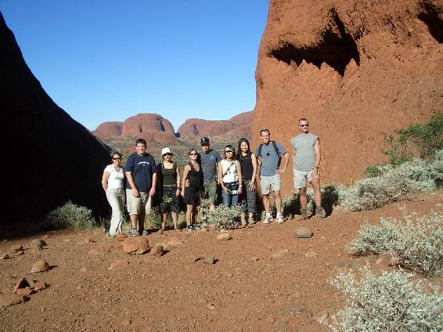
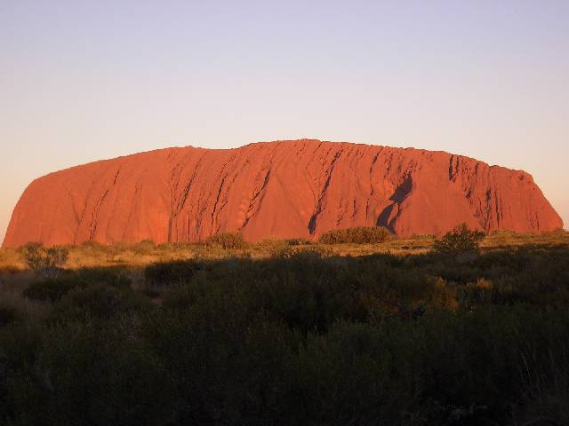
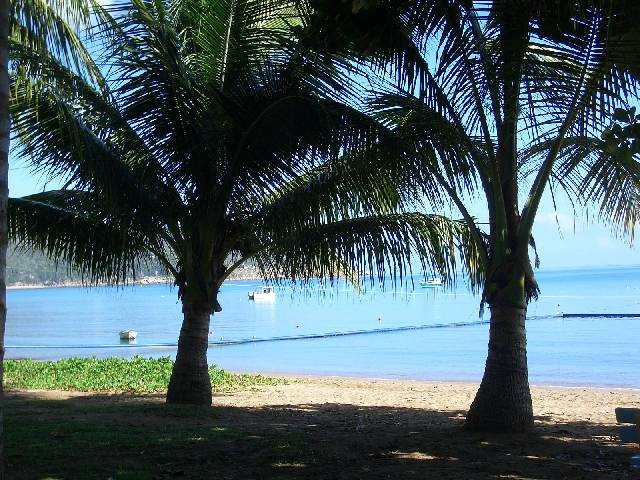
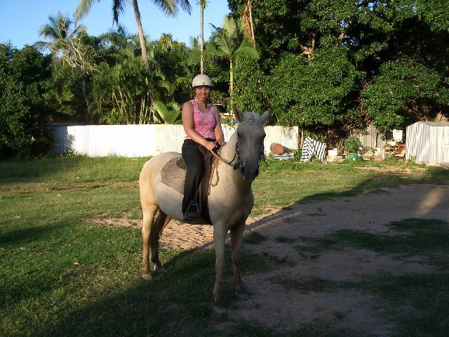

2nd Instalment
Airley Beach, Australia
Well, I guess it is time for entry number 2…
I've done a few trips since leaving Sydney but I guess I better start at the beginning.
My first trip was to Alice Springs and the 3 day safari into the Outback to see Uluru, i.e. 'The Rock'. This trip was pretty amazing and I've met some really nice people. We started of at a Camel Farm, which, it still being only 8am in the morning, I kind of gave a miss and had a coffee instead. (We did leave Alice Springs at 6AM!). Our next stop was the Kings Canyon. This is a pretty amazing place and we hiked up and down and back and forth for about 3 hours. Which in that heat and with those stupid flies (I really wish I had one of those stupid looking hats at that point - honest, the flies are bad!) was hard going but it was worth it just for the views! After that we more than deserved a break and we drove onto our campsite, which really was in the middle of nowhere. Nothing, nada, absolutely nothing. It was great!! We had a campfire in which we cooked our dinner and then it was into our Swags to sleep under the stars. Not before double (even triple) checking the sleeping bag for any creatures that shouldn't be there, of course. Wow, the sky is something else out there, the stars are amazing and you could lie there for hours just looking up and gazing…but as it was a strenuous day I was out pretty quick.
The next day was a 7am start (didn't even get up that early when I was working!!) and we were of to see the Olgas, which is a collection of smaller and more rounded Rocks. The Aboriginal word for it is Kata Tjuta, which means 'Many Heads'. Again, it was amazing and the views were really good. Also saw a couple of lizards and a duck in a pond.
Then it was onto Uluru to watch the sun set. We had champagne and crackers (Ozzies seem to love crackers?) and watched the Rock turn orange. It was really nice and a lovely way to round of the day. Then it was back to camp.
The last day we got up at 5AM. Now anyone who knows me will know that that was not easy for me!!! But seeing the sun rise over Uluru was worth getting up for even that early! The only thing that sort of spoiled it a bit was the fact that there were tons of people there. But the Rock does turn the most amazing colours and is well worth seeing. Then it was onto the Rock itself. Everyone, except for me and Rebecca, climbed the Rock which is a shame really as the Aboriginals ask everyone not to climb it. To them it is sacred and shouldn't be climbed only for certain rituals they perform. So Rebecca and me went of and did the Base Walk instead, which I think must be better than climbing it. Honestly, for one the Rock is very (and I mean very!) steep so it is hard to climb it and secondly there is nothing around for miles so the view can't even be that good! The Base Walk was really nice and you could actually see what the Rock looked liked.
Then it was back to Alice Springs, which was a bit of a long way. The trip really was good and the only disappointment was not seeing any creepy crawleys or snakes or anything really - sorry, I did see tons of flies!
Well, that was one trip, are you all getting bored yet??
Next city I flew to was Cairns. Cairns is not really a nice city but is good to get started from. I did the next two trips from here. The first trip being the Atherton Table Land trip. It was like being in England, very strange! Lots of green fields and trees (they looked a bit different, but hey), cows and horses. Amazing!
Our tour guide talked non-stop all day and I could fill you in - BUT I won't. We stopped at the Cathedral Fig Tree (which looked nothing like a Cathedral) and had a walk around the Rainforest. Cool. We also visited some Crater Lakes, which had some really cute turtles in it. After that we went onto some very nice looking Water Falls. One of the Water Falls I visited was named Millaa Millaa. We were told that the Timotei (Shampoo) Advert was filmed here a few years ago, the one were she comes out and throws her head back and her hair flies through the air. Well, I didn't do that! My hair is to short and it was bloody freezing!!! I know Oz is believed to be always hot but that really isn't true!! Well, not cold, like at home but still. I actually read a magazine the other day that had a winter wardrobe in it with coats and everything. What is that all about?? It only drops to about 20, would you really need a coat??? Sorry, just thought I throw that one in…
That evening we went Plattypuss spotting and saw - NONE. Just the nose of one, I guess that almost counts. Still it was fun.
After dinner we went out again and did some night canoeing. Now that was fun! Never canoed before and it was pitch black and then he told us to take of our shoes walking down the bank to the canoe. That may not sound like much but knowing (haven't seen much yet but…) what sort of stuff creeps around at night in the dark that wasn't so nice. All worth it though. We all had our torches and once we paddled our way across the lake we started 'spotting'. We didn't see much but I did spot a Possum and we saw some Lizards and the whole thing was great. The really funny thing about it was Hayley and her mum Susan. All you could hear in the dark was: Where are you going mum? What are you doing? No not that way. Mum!!!! Pete, who I shared my canoe with and me were laughing quiet a lot, they were going round in circles for ages.
The next day, I opted, along with everyone else, to do a bike ride around the lake. Why, I don’t know!! I swear, never again! That really was hard work. As if that wasn't enough I also did the canoeing in the afternoon. Thought I would see what the lake looked like in the day light. The Table Land was so nice I opted to stay on another night (just to recover really).
And that was trip two…only one more trip to go!
Well, my last trip was going to Cape Tribulation. And I have to say, apart from the horse riding I did there, it wasn't such a good trip. The fact it kept raining probably didn't help. Met some nice girls which was nice but the beaches were very disappointing (wet and not white like in the postcards). And you still can't swim in the sea because the Box Jellyfish (apparently the most poisonous creature on the planet!) is still in the water. The rainy season is lasting a bit longer than it should, or so the locals keep saying.
The horse riding more than made up for it though. Riding along the beach - great!
Since that last trip I have traveled onto Mission beach where I was planning to chill out and sun bathe for a couple of days but - guess what?? - it rained! Bum. So I traveled onto Magnetic Island. Now this is a slice of heaven on Earth!! I could have stayed there forever! I guess the weather helped as it has stopped raining now and the weather really is perfect! I stayed in Horseshoe Bay (just the name is fantastic!). This island just has perfect beaches and there is hardly anyone on it. I hiked around a bit and found two beaches with only one person on each. Just lovely. I also saw a koala in the tree and a big lizard. And one of those Anteaters/Hedgehogs (can't remember the name of them). They also have some of the most amazing butterflies, their colours are fantastic. I also did a horse ride here and which was pretty cool. I got to ride/swim a horse bareback in the sea. I can't say that I wasn't a bit apprehensive…but it was fantastic. Just like in the pictures you see! And to top the day off we saw loads of Wallabies on the way back, hopping along the field. Amazing! Unfortunately I had to leave today but I met a nice fellow coming over on the ferry and we had coffee before I boarded my coach to travel onto Airley Beach. Now that is Oz. Oz people will just talk to you because they want to. I went into a shop the other day and the lady was chatting away, I got out and an hour went by. People really are friendly.
The other thing that I found strange about Oz, is that they have 'Drive Through Bottle Shops'. You just drive your car in and order your booze, they bring it to you and you drive off. Only in Oz!
Anyway, I am on my third page so I better shut up now! I am off to do some sailing around the Whitsunday Islands tomorrow. Three days on a boat, that will be interesting!
Hope you are all happy and well, lots of love,
Kerstin xxx
PS I hope the pictures are ok this time and you can all view them ok. If not, don't worry I'll have tons more that I will quiet happily show to anyone once I am back!
I've done a few trips since leaving Sydney but I guess I better start at the beginning.
My first trip was to Alice Springs and the 3 day safari into the Outback to see Uluru, i.e. 'The Rock'. This trip was pretty amazing and I've met some really nice people. We started of at a Camel Farm, which, it still being only 8am in the morning, I kind of gave a miss and had a coffee instead. (We did leave Alice Springs at 6AM!). Our next stop was the Kings Canyon. This is a pretty amazing place and we hiked up and down and back and forth for about 3 hours. Which in that heat and with those stupid flies (I really wish I had one of those stupid looking hats at that point - honest, the flies are bad!) was hard going but it was worth it just for the views! After that we more than deserved a break and we drove onto our campsite, which really was in the middle of nowhere. Nothing, nada, absolutely nothing. It was great!! We had a campfire in which we cooked our dinner and then it was into our Swags to sleep under the stars. Not before double (even triple) checking the sleeping bag for any creatures that shouldn't be there, of course. Wow, the sky is something else out there, the stars are amazing and you could lie there for hours just looking up and gazing…but as it was a strenuous day I was out pretty quick.
The next day was a 7am start (didn't even get up that early when I was working!!) and we were of to see the Olgas, which is a collection of smaller and more rounded Rocks. The Aboriginal word for it is Kata Tjuta, which means 'Many Heads'. Again, it was amazing and the views were really good. Also saw a couple of lizards and a duck in a pond.
Then it was onto Uluru to watch the sun set. We had champagne and crackers (Ozzies seem to love crackers?) and watched the Rock turn orange. It was really nice and a lovely way to round of the day. Then it was back to camp.
The last day we got up at 5AM. Now anyone who knows me will know that that was not easy for me!!! But seeing the sun rise over Uluru was worth getting up for even that early! The only thing that sort of spoiled it a bit was the fact that there were tons of people there. But the Rock does turn the most amazing colours and is well worth seeing. Then it was onto the Rock itself. Everyone, except for me and Rebecca, climbed the Rock which is a shame really as the Aboriginals ask everyone not to climb it. To them it is sacred and shouldn't be climbed only for certain rituals they perform. So Rebecca and me went of and did the Base Walk instead, which I think must be better than climbing it. Honestly, for one the Rock is very (and I mean very!) steep so it is hard to climb it and secondly there is nothing around for miles so the view can't even be that good! The Base Walk was really nice and you could actually see what the Rock looked liked.
Then it was back to Alice Springs, which was a bit of a long way. The trip really was good and the only disappointment was not seeing any creepy crawleys or snakes or anything really - sorry, I did see tons of flies!
Well, that was one trip, are you all getting bored yet??
Next city I flew to was Cairns. Cairns is not really a nice city but is good to get started from. I did the next two trips from here. The first trip being the Atherton Table Land trip. It was like being in England, very strange! Lots of green fields and trees (they looked a bit different, but hey), cows and horses. Amazing!
Our tour guide talked non-stop all day and I could fill you in - BUT I won't. We stopped at the Cathedral Fig Tree (which looked nothing like a Cathedral) and had a walk around the Rainforest. Cool. We also visited some Crater Lakes, which had some really cute turtles in it. After that we went onto some very nice looking Water Falls. One of the Water Falls I visited was named Millaa Millaa. We were told that the Timotei (Shampoo) Advert was filmed here a few years ago, the one were she comes out and throws her head back and her hair flies through the air. Well, I didn't do that! My hair is to short and it was bloody freezing!!! I know Oz is believed to be always hot but that really isn't true!! Well, not cold, like at home but still. I actually read a magazine the other day that had a winter wardrobe in it with coats and everything. What is that all about?? It only drops to about 20, would you really need a coat??? Sorry, just thought I throw that one in…
That evening we went Plattypuss spotting and saw - NONE. Just the nose of one, I guess that almost counts. Still it was fun.
After dinner we went out again and did some night canoeing. Now that was fun! Never canoed before and it was pitch black and then he told us to take of our shoes walking down the bank to the canoe. That may not sound like much but knowing (haven't seen much yet but…) what sort of stuff creeps around at night in the dark that wasn't so nice. All worth it though. We all had our torches and once we paddled our way across the lake we started 'spotting'. We didn't see much but I did spot a Possum and we saw some Lizards and the whole thing was great. The really funny thing about it was Hayley and her mum Susan. All you could hear in the dark was: Where are you going mum? What are you doing? No not that way. Mum!!!! Pete, who I shared my canoe with and me were laughing quiet a lot, they were going round in circles for ages.
The next day, I opted, along with everyone else, to do a bike ride around the lake. Why, I don’t know!! I swear, never again! That really was hard work. As if that wasn't enough I also did the canoeing in the afternoon. Thought I would see what the lake looked like in the day light. The Table Land was so nice I opted to stay on another night (just to recover really).
And that was trip two…only one more trip to go!
Well, my last trip was going to Cape Tribulation. And I have to say, apart from the horse riding I did there, it wasn't such a good trip. The fact it kept raining probably didn't help. Met some nice girls which was nice but the beaches were very disappointing (wet and not white like in the postcards). And you still can't swim in the sea because the Box Jellyfish (apparently the most poisonous creature on the planet!) is still in the water. The rainy season is lasting a bit longer than it should, or so the locals keep saying.
The horse riding more than made up for it though. Riding along the beach - great!
Since that last trip I have traveled onto Mission beach where I was planning to chill out and sun bathe for a couple of days but - guess what?? - it rained! Bum. So I traveled onto Magnetic Island. Now this is a slice of heaven on Earth!! I could have stayed there forever! I guess the weather helped as it has stopped raining now and the weather really is perfect! I stayed in Horseshoe Bay (just the name is fantastic!). This island just has perfect beaches and there is hardly anyone on it. I hiked around a bit and found two beaches with only one person on each. Just lovely. I also saw a koala in the tree and a big lizard. And one of those Anteaters/Hedgehogs (can't remember the name of them). They also have some of the most amazing butterflies, their colours are fantastic. I also did a horse ride here and which was pretty cool. I got to ride/swim a horse bareback in the sea. I can't say that I wasn't a bit apprehensive…but it was fantastic. Just like in the pictures you see! And to top the day off we saw loads of Wallabies on the way back, hopping along the field. Amazing! Unfortunately I had to leave today but I met a nice fellow coming over on the ferry and we had coffee before I boarded my coach to travel onto Airley Beach. Now that is Oz. Oz people will just talk to you because they want to. I went into a shop the other day and the lady was chatting away, I got out and an hour went by. People really are friendly.
The other thing that I found strange about Oz, is that they have 'Drive Through Bottle Shops'. You just drive your car in and order your booze, they bring it to you and you drive off. Only in Oz!
Anyway, I am on my third page so I better shut up now! I am off to do some sailing around the Whitsunday Islands tomorrow. Three days on a boat, that will be interesting!
Hope you are all happy and well, lots of love,
Kerstin xxx
PS I hope the pictures are ok this time and you can all view them ok. If not, don't worry I'll have tons more that I will quiet happily show to anyone once I am back!

Kings Canyon

At the top of Kings Canyon

Still Kings Canyon...the views really were amazing!

This is at the Olgas with my tour group

Uluru at Sunset

Uluru at Sunrise (was trying to not get anyone in the picture, but impossible!)

Our end of tour get together (boys went missing...think they might be at the bar...)

Millaa Millaa Falls

Me in a canoe with lovely face painting

Horseshoe Bay - Magnetic Island

Me on Honey